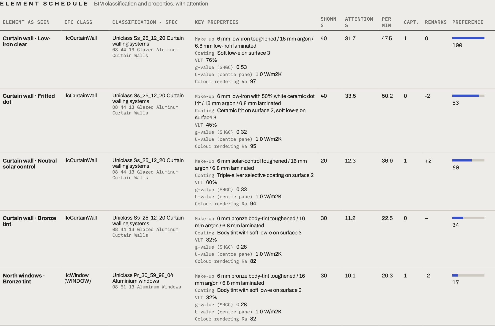

Decode walk · element schedule

IFC class, Uniclass code and spec section for every element as seen.
Key properties straight from the metadata: make-up, coating, VLT, g, U and Ra.
Time on show, attention, captures, remarks and a preference index. Exports as CSV.
Visual Vibes · glazing study · report